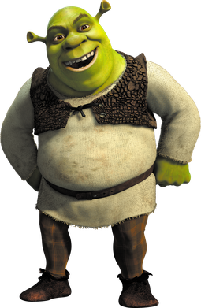
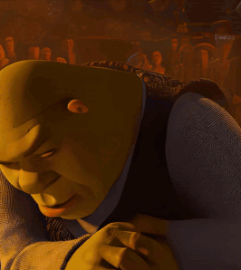

Imágenes en HTML
1) Imagen externa con alt
2) Imagen interna con title

3) Controlar tamaño sin deformar (solo width)
4) Controlar tamaño manual (width y height, con deformación)
4) Imagen Ausente
5) Imagen con enlace
6) GIF animado

Volver